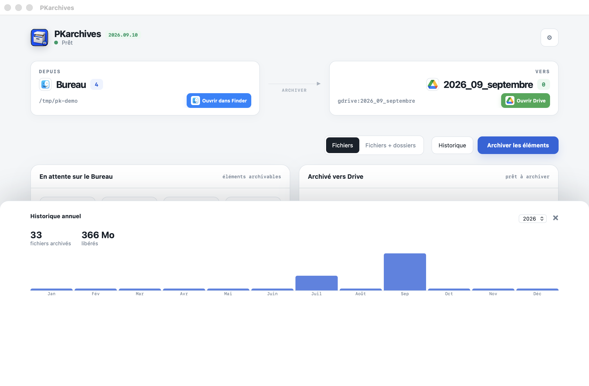

Chaque mois raconte ce que vous avez libéré.
Changez d’année, comparez les périodes et gardez une trace simple de chaque archivage.

PKarchives pour macOS
Vos fichiers quittent le Bureau, rejoignent Drive et se rangent automatiquement. Un clic. Rien de plus.
Une seule action.
PKarchives identifie les éléments, montre exactement ce qui va partir, puis les classe dans le dossier du mois.
Tout reste lisible.
Douze mois, y compris ceux à zéro. Voyez en un regard combien de fichiers sont partis et l’espace libéré.
Changez d’année, comparez les périodes et gardez une trace simple de chaque archivage.

Vos fichiers. Vos règles.
Les transferts passent par rclone. La configuration reste sur votre Mac. Vous choisissez entre la Corbeille et la suppression définitive.
PKarchives est gratuit et open source.
Télécharger pour macOS